New Idea → New Change → New Improve → New Idea → New Change → New Improve → New Idea → New Change → New Improve → New Idea → New Change → New Improve →
selected work01/ 04
MedEasy
AirPal
ShuttleSync
Portraits in Motion
A medication app that helps older adults refill prescriptions with confidence.
A medication support app designed to help older adults with chronic conditions scan, review, edit, remind and share medication information with more confidence.
Health Interface
Older Adults
Accessibility
Usability Testing
Iteration
Overview
Bridging the gap between elderly users and digital medication management
MedEasy was designed through a process of secondary research, lo-fi wireframing, and iterative usability testing to reduce the cognitive load placed on older adults managing complex medication regimens.
Create low fidelity prototypes for login, homepage, dispensing steps, reminders, and personal information.
04 Testing
Remote verbal thinking test with four participants（Think-aloud sessions）
05 Iteration
Simplify visual guidance, reminder location, and offline feedback based on user behavior.
User Flow
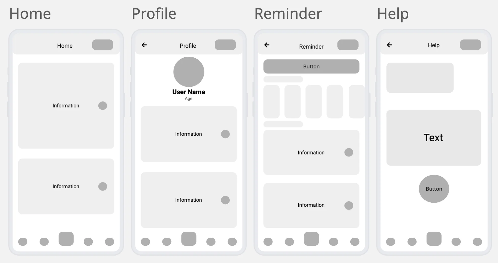
03 / Features
Key Features
3-Step Refill: scan, confirm, send.
Bilingual Toggle
Read-Aloud & Voice Input
Large Touch Targets
Offline Retry
UI Prototype Details
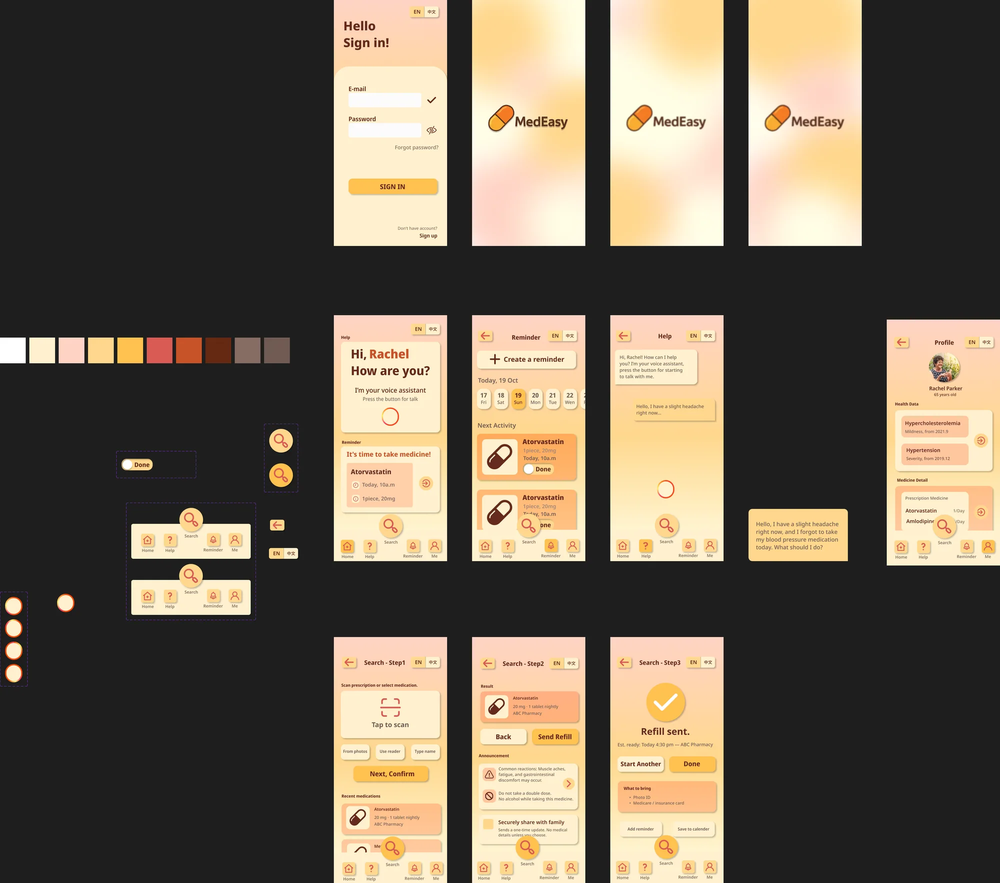
04 / Iteration
What I Changed
Before → After
Before
✕ Unclear starting point
✕ Icon-only navigation (hard to understand)
✕ Reminder actions were missed
✕ Small reminder pickers
After
✓ Clear "Tap to scan" cue
✓ Icon + text navigation
✓ Reminder/Calendar moved closer to success message
✓ Larger date/time controls
05 / Reflection
Learnings
Small details such as labels, feedback, touch size, and action placement can strongly affect whether older users feel safe continuing a task.
This project helped me understand that accessibility is not only about adding features, but about reducing uncertainty at each step. For older adults, a successful interface needs to feel predictable, forgiving, and respectful. My biggest design decision was to make the refill process narrower, not broader: fewer steps, clearer actions, and stronger feedback.
AirPal is a wearable airport companion for first-time solo travellers. It combines quick-access storage, a foldable screen, real-time guidance and support access to make airport journeys clearer and less stressful.
Physical-Digital
Travel UX
Concept Design
User Testing
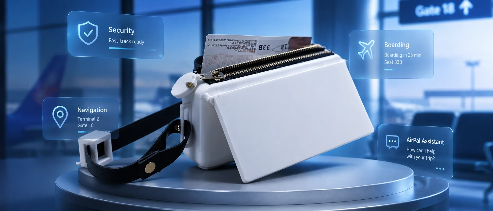
My Role
Physical-digital interaction designerI contributed to concept development, physical form decisions and testing interpretation. My strongest contribution was connecting the wearable bag form with the on-screen guidance system, so AirPal felt like support within an airport journey rather than just a screen attached to a product.
Helped shape AirPal as a wearable crossbody bag instead of only a screen-based apps.
02 / Physical Prototype Thinking
Explored the waist bag form, 90° foldable screen, quick-access storage, and light/vibration alerts through sketches and product-detail thinking.
03 / Testing Reflection
Helped interpret testing feedback.
01 / Problem
Why AirPal?
First-time solo travel is not only about finding information. It is about knowing what to do next.
Airports can overwhelm first-time solo travellers with unfamiliar layouts, time pressure, security rules, gate changes and limited support. Our design challenge was to reduce uncertainty by making the next action visible, simple and reassuring.
🔊
Cognitive Overload
🤔️
Unfamiliar Navigation
😔
Lack of Support
Act II, Concept
Wearable Airport Companion
A physical-digital solution, not just another phone interface.
AirPal is a crossbody / waist bag with a foldable glanceable screen. It keeps passports, boarding passes, cards and phones close, while providing journey guidance, flight updates, navigation prompts and support options.
Secure Storage
Keeps key travel items easy to reach during security and boarding.
90° Foldable Screen
Allows glanceable viewing while walking, standing or waiting.
Multimodal Alerts
Uses light, vibration and audio to notify users in noisy airport environments.
03 / Solution
What AirPal Delivers
Focused on the airport moments where users feel most uncertain.
🧭Journey Guide
⏱️Boarding Countdown
🗺️Step-by-step Navigation
🛂Passport Status Alert
🙋Staff Help
🌐Translation
🤝Peer Support
📍Progress Indicator
Prototype Detail
04 / Testing
How We Tested It
Scenario-based testing helped us see how users acted under pressure.
We tested AirPal with 5 proxy users in a busy user testing fair environment. The methods included think-aloud, role-play tasks, SUS survey and short interviews.
Task 1 / Security Check
Users followed on-screen guidance to remove the correct items under time pressure.
Task 2 / Gate Navigation
Users followed instructions to reach the boarding gate, but distance-only directions were confusing.
Task 3 / Passport Lost
Users responded quickly to the alert and chose support options to solve the problem.
SUS Result
72.5
Good overall usability, with room to simplify navigation and menus.
Testing Insight
Insight 1 — Navigation needed landmarks
Insight 2 — Support needed to be visible earlier
Insight 3 — The interface needed stronger hierarchy
User Testing Photos
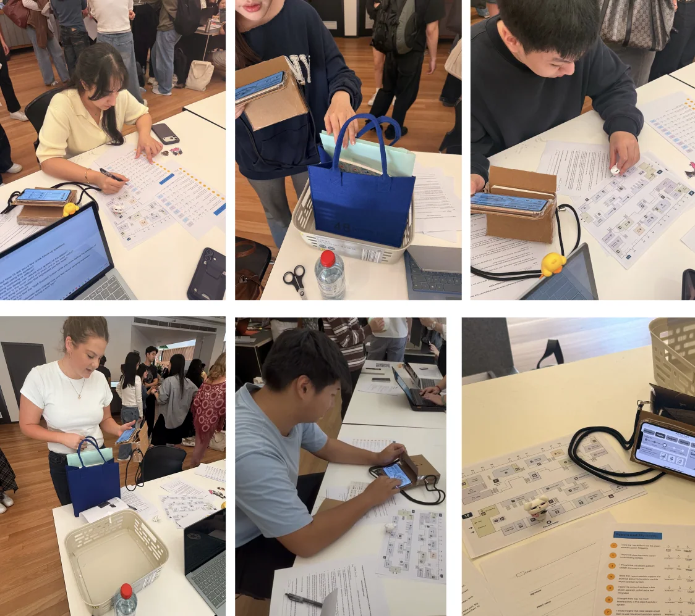
05 / Interface Iteration
What Changed
From messy screens to clearer guidance.
Before
✕ Too much information in one screen
✕ Support was less visible
✕ Direction steps were too long
✕ Users could lose track of current progress
After
✓ Divided interface into Journey, Navigation and Support
✓ Made staff help, translation and peer support easier to access
✓ Simplified directions into shorter steps
✓ Added progress indicators to show current stage
Interface Iteration Evidence
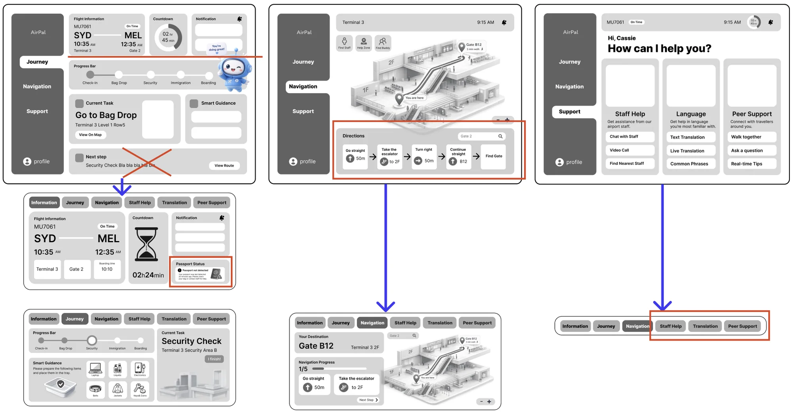
06 / Future Direction
Next Improvements
What I would improve if the project continued.
Contextual Navigation
Use landmarks like “towards Starbucks” instead of only metres and arrows.
Simpler Menu Hierarchy
Group functions into Journey, Navigation and Support to reduce decision-making pressure.
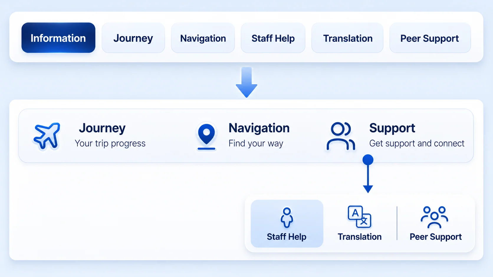
Emotional Support
Add calming materials, friendly feedback and small rewards to make the journey feel less stressful.
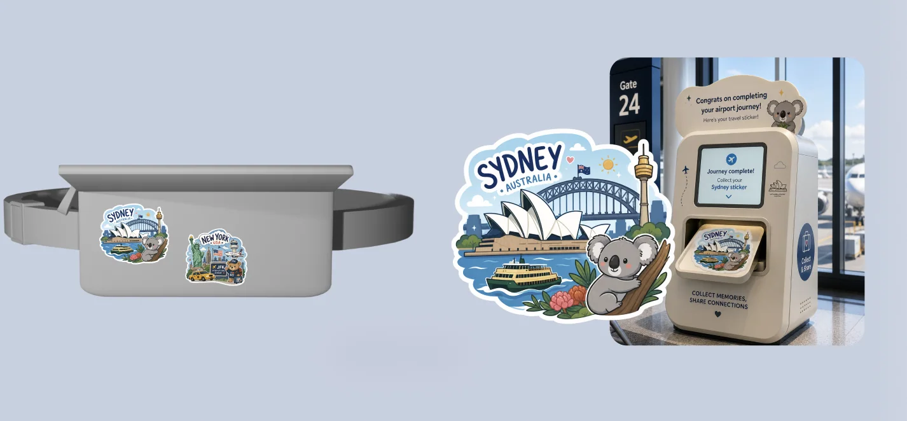
07 / Reflection
What I Learned
Useful design is not about adding more functions. It is about making the next step clearer.
AirPal helped me understand how physical form and interface design need to work together. My key learning was that in stressful environments, a product should reduce choices, guide one action at a time, and provide reassurance before users feel lost.
A three-device badminton experience that helps socially hesitant students arrive, check in and play together at their own pace.
Multi-device
Motion Input
Inclusive Design
Usability Testing
Group Project
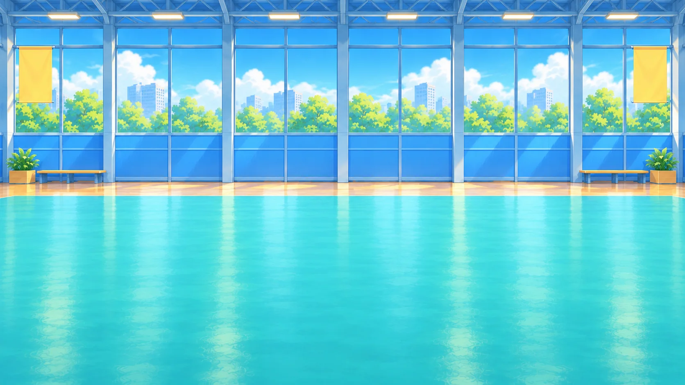
Overview
From uncertainty to play
Playing casual badminton is not only about finding a court. Students also have to work out where, when and with whom, and whether a session will suit them. ShuttleSync connects private planning on a phone with a shared court-side screen and a racket you swing to play.
Context
DECO2200 Interaction Design StudioGroup of three, The University of Sydney
My role
Character design, online ethnography, testing materialsShared UI design, coding, iteration and video production with Libra
Timeline
Semester 2, 2026
Built with
React, TypeScript, p5.js, ml5 PoseNet, NodeAI-assisted coding with ChatGPT and Claude
We read Reddit threads, observed casual sessions at the Sydney University Sports Centre and compared five existing tools. Each one solved a part of the journey, never the whole experience.
Suitability
Court access, timing, conditions and group fit all matter.
Compatibility
Similar skill can still mean different intensity, style or expectations.
Tacit knowledge
Solo and new players have fewer signals about where to go and who to join.
Fragmentation
Planning, booking, people and court-side coordination happen separately.
How might we connect digital planning with real-time court-side information, so students can decide where, when and with whom to play?
Journey map
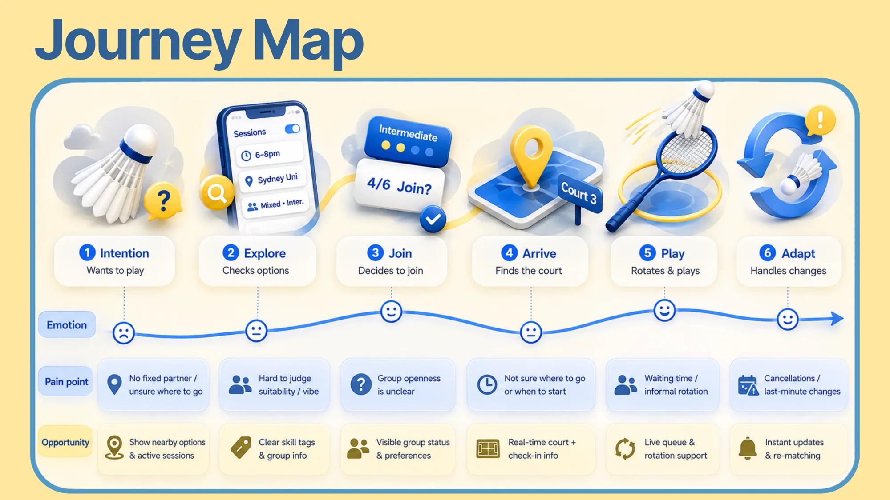
Early sketches
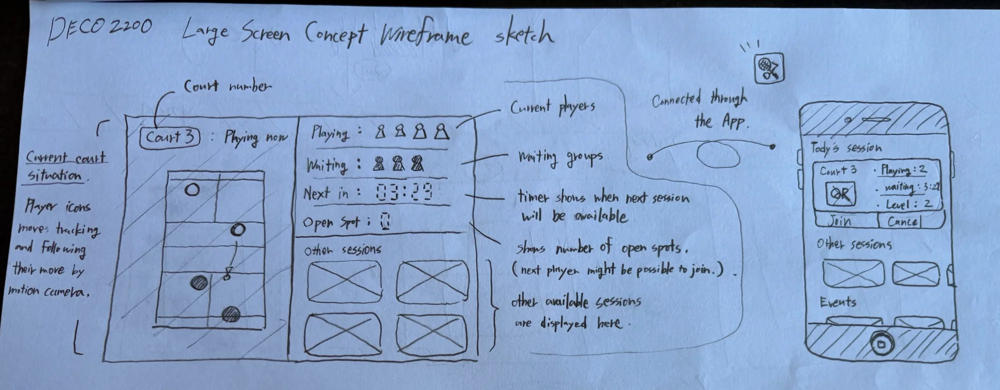
02 / Concept
Three devices, three roles
Private decisions, then shared context, then movement-based play.
Phone
Browse sessions, join solo or as a pair, and get a personal four-digit code.
Shared screen
Check-in, avatars, warm-up, court call, a seven-round game and results.
Racket
Your phone becomes the racket: motion input, with a touch fallback.
The final system
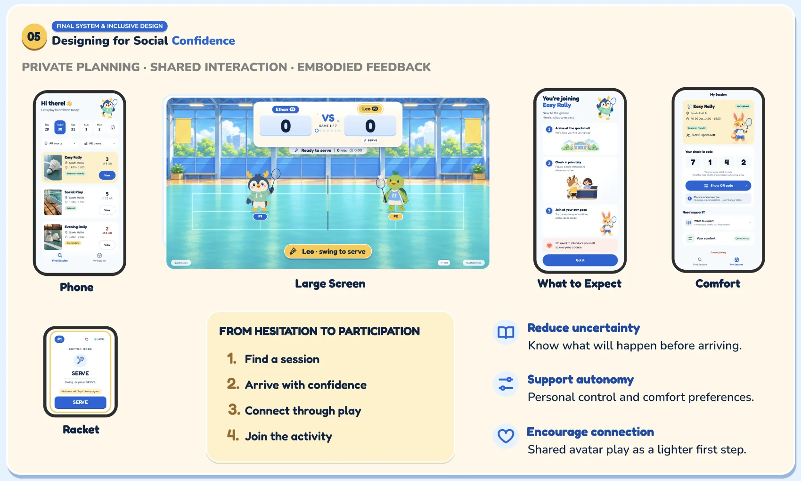
Avatars I designed
03 / Testing
What the Testing Fair revealed
24 September 2026. Seven participants in four groups, with five survey responses. People enjoyed the avatar game, and the same session surfaced where the system was hard to follow.
Participants
7
in four test groups
Enjoyment
6.0
out of 7, five responses
Movement clarity
4.6
out of 7, five responses
Tracking
Movement lagged behind players, so we moved to upper-body tracking with clearer status cues.
Discoverability
Some shakes and body movements were missed, so we added a guided Move, Wave and Swing practice with touch controls.
Identity
Two participants picked the same character, so we added player slots and a character lock.
Device handoff
The roles of phone, screen and racket were unclear, so check-in became a personal four-digit code with explicit P1 and P2 status.
Group changes
Leaving mid-session was unfinished, so we designed Find a player, Wait 5 minutes and I’m back.
Before and after
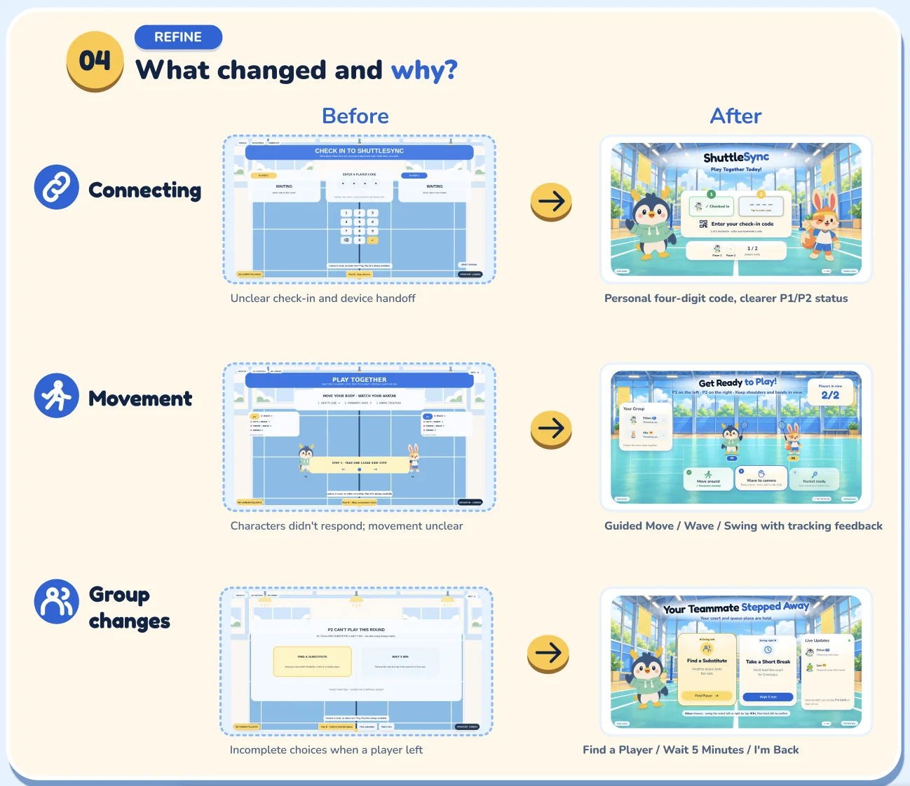
Survey means, 1 to 7
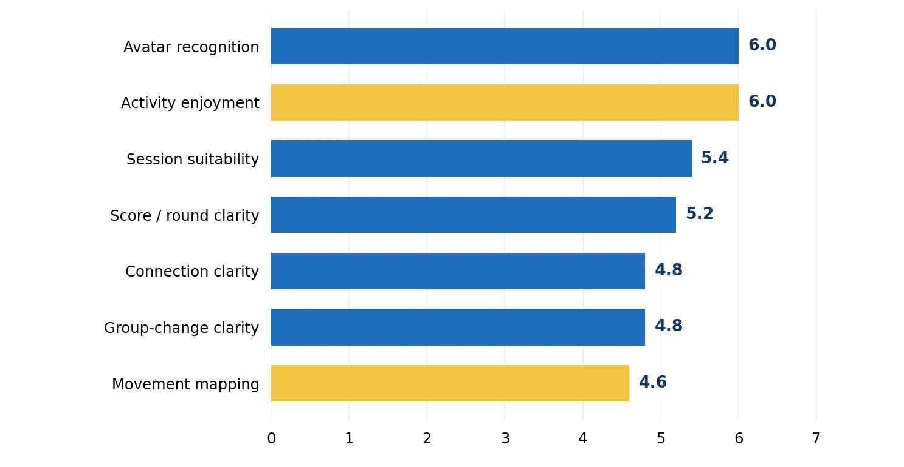
04 / Inclusive design
Designing for social hesitation
We focused on students who want to join casual badminton but hesitate around unfamiliar people. The goal was to make arrival predictable and participation controllable.
What to Expect
Phone guidance: arrive, check in privately, join at your own pace.
Your Comfort
Quiet alerts and less motion, controlled by each player.
Shared avatar play
A playful common activity on the big screen as a lighter first step.
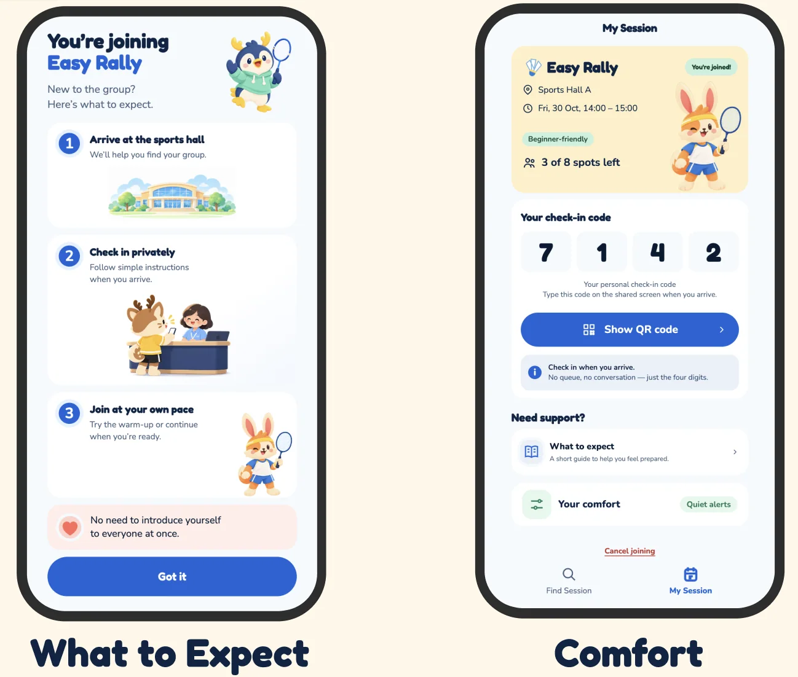
This is a design rationale. Whether it works for hesitant players still needs more evidence from real users.
A shop-window performance in which one Universal Robot arm plays four Penhaligon’s Portraits characters. Knock on the door, and the dinner party falls apart.
Robotics
Retail Experience
Speculative Design
Choreography
Group Project
The performance, filmed in the robotics lab. Three minutes, with sound.
Prologue
What if a shop window performed its characters instead of displaying them?
Penhaligon’s Portraits collection gives each perfume a fictional aristocrat with secrets and scandals. Our concept turns the shop window into a small public theatre, where a single robot arm becomes each character in turn.
A speculative student brief. Not commissioned by or affiliated with Penhaligon’s.
01 / Research
Scent Futures
The project began with my individual research into robots, retail and the invisible language of smell. One question guided it: what if perfume retail shifted from displaying finished products to creating live, personal scent experiences?
Personalisation
A window that senses a passer-by and mixes a scent before they enter the store.
Personalisation ↔ Surveillance
Machine / Performance
A robot arm makes perfume in full view of the street, so the making becomes the show.
Craftsmanship ↔ Automation
Aesthetic
Scent drifts beyond the storefront and becomes part of the street’s atmosphere.
Atmospheric care ↔ Behavioural manipulation
Research collage
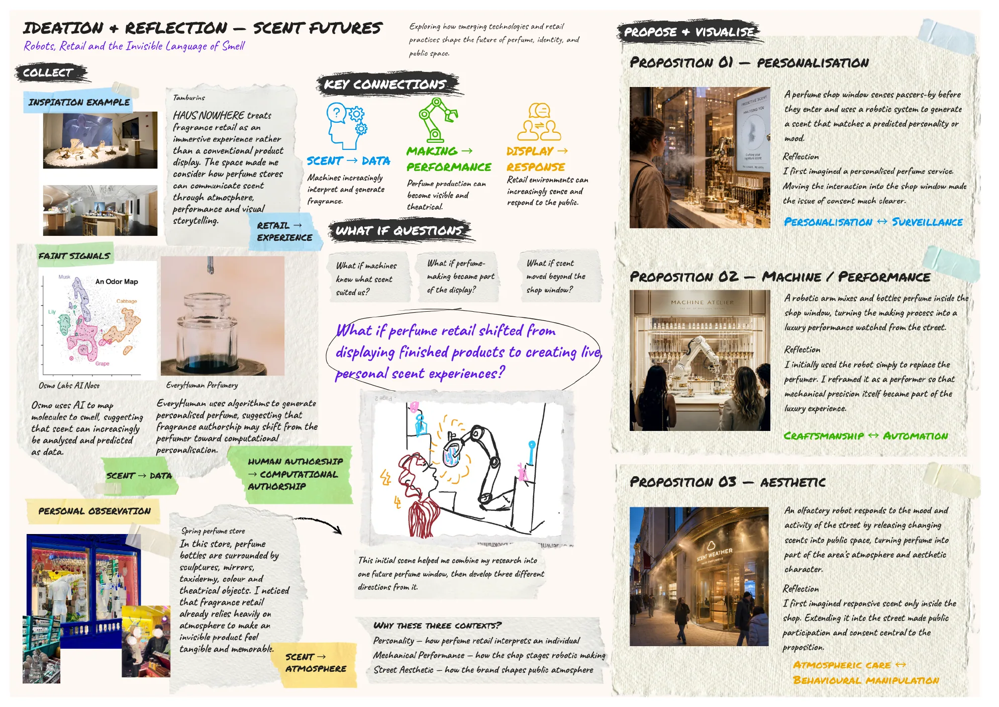
02 / Concept
One mechanical actor, four identities
If the same machine can become four personalities, where does brand character live: in the object, the story, or the behaviour?
A display shows the character. A human actor performs it. A robot performs personality while remaining visibly a programmable machine.
Same body
+ Different mask
+ Different timing
+ Different trajectory
= Different perceived personality
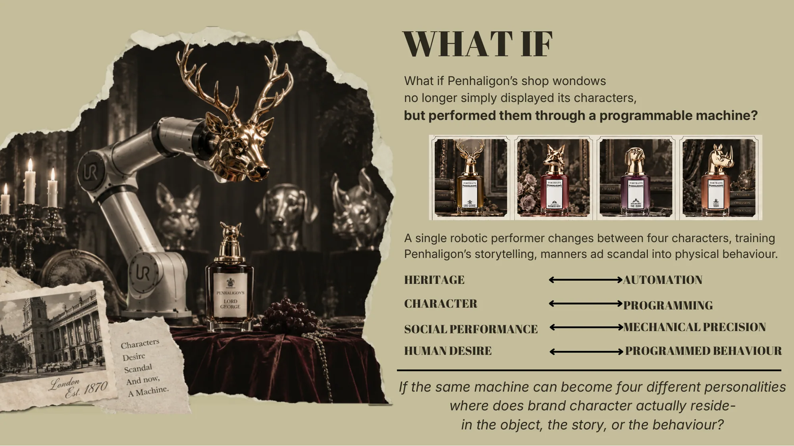
Lord Georgethe Stag
Head of the family. Rich, noble, deceptive.
Duchess Rosethe Fox
George’s daughter. Coy, full of secrets.
The Dukethe Hound
Married to Rose. A dramatic dandy.
Terrible Teddythe Rhino
The outsider. Smooth, dangerous, persistent.
All fourplayed by
One Universal Robots arm
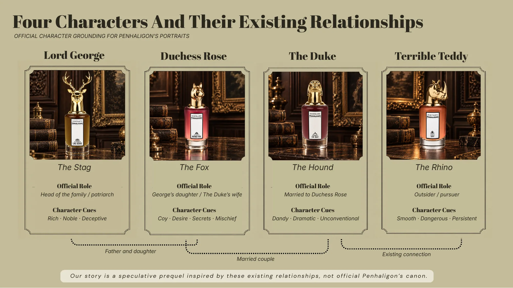
Act III, Interaction
A simple knock, a different ending
A brass door knocker on the window is the only input. It invites passers-by to trigger the story.
01 Input detected
A sensor picks up the knock.
02 Teddy arrives
The robot picks up Terrible Teddy’s head.
03 Dinner is interrupted
The performance begins and the story unfolds.
04 Reset
The scene resets, ready for the next visitor.
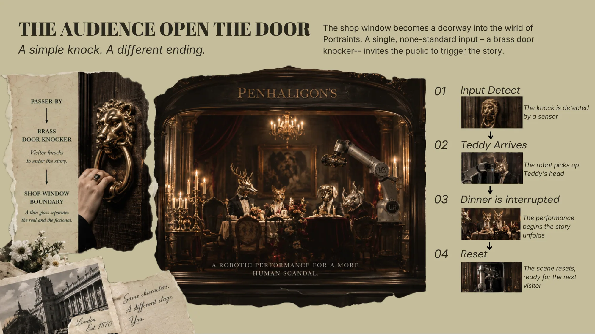
Act IV, Story
The eve of the wedding
A speculative prequel inspired by the characters’ existing relationships, not official canon.
The perfect dinner
Lord George hosts a refined dinner for Duchess Rose and the Duke. Everything appears calm and proper.
The knock
A sudden knock breaks the calm and the table falls silent.
Teddy arrives
Terrible Teddy enters uninvited, and ceremony turns to unease.
The Duke freezes
At the sight of Teddy the Duke falters, charged with recognition.
Rose understands
Rose notices the Duke’s reaction. What was hidden becomes impossible to ignore.
George intervenes
George steps in to preserve the wedding arrangement.
Rose chooses
She turns away from the marriage and leaves.
Aftermath
Rose is gone, George keeps his order, and the Duke finally faces Teddy.
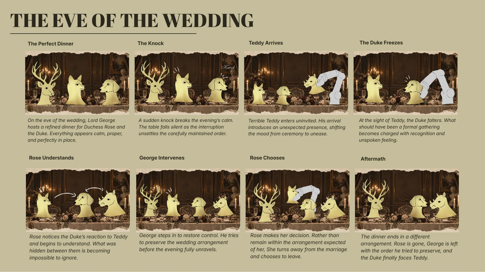
Act V, Choreography
Movement makes the relationships visible
Brand values are translated into behaviour: establishment becomes order, provocation becomes intrusion, and scandal emerges through changing distance and timing.
Order
Even spacing, slow movement, long deliberate pauses.
Establishment / Control
Intrusion
Teddy approaches directly and the formal rhythm is interrupted.
Provocation / Disruption
Tension
The Duke withdraws. Pauses grow longer and less predictable.
Scandal / Revelation
Break
Rose turns outward and the symmetry disappears.
Choice / Defiance
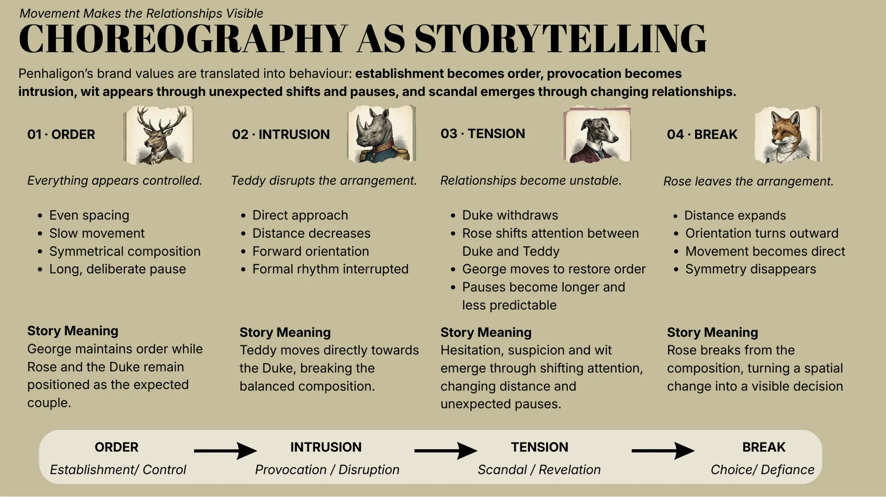
Act VI, Prototype
Where the prototype stands
Planned robot performance
Four character routines, one prop held at a time, with a common grip stem added to each head before printing.
Staged for filming
Manual prop changes between takes. An operator starts the routine after a knock; sound and lighting are edited in.
Future integration
Live knock sensing, automated character-box doors, automatic prop retrieval and one continuous performance.
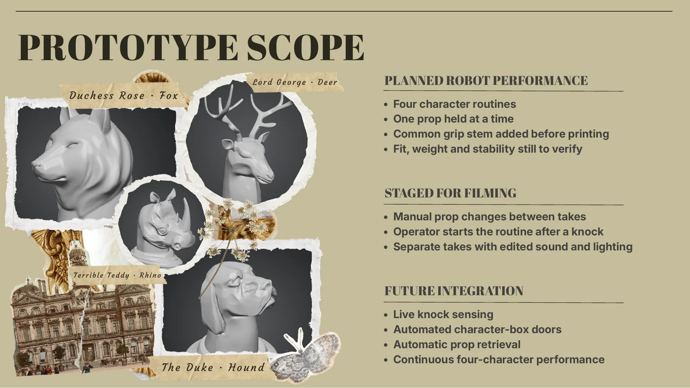
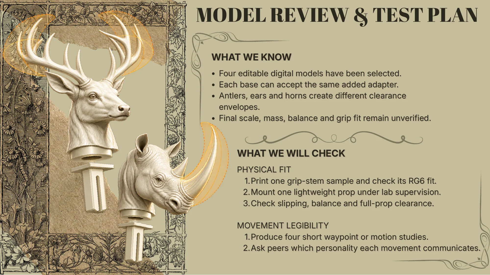
Epilogue
What comes next
The four heads are printed and gilded and the routines have been filmed, as the film at the top of this page shows. Still ahead: live knock sensing, automatic prop changes and one continuous four-character performance.
Concept visualisations were generated with ChatGPT from prompts written by the team. Character and brand references belong to Penhaligon’s.